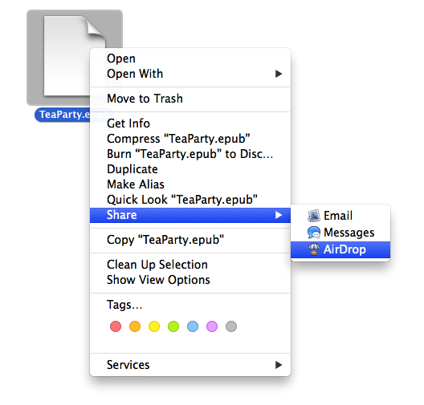
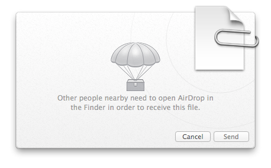
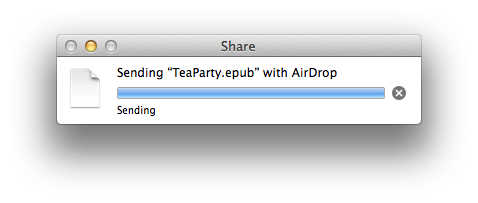

AirDrop lets you quickly send files, clippings, webpages, and more to anyone near you—wirelessly. AirDrop doesn’t require passwords, setup, or special settings. It makes sharing with neighbors as simple as dragging and dropping.
Introduced in OS X v10.6 Lion, AirDrop uses the built-in WiFi hardware in Apple computers to allow them to easily share files, without the need of a Wi-Fi network or any special setup or configuration.
The following steps detail how to send a file between two computers using AirDrop:
The first step is for the person who will receive the file, to make their computer visible to other nearby computers, via AirDrop. This is done by opening the AirDrop viewer window.
NOTE: a computer will only be visible to other computers via AirDrop, when the AirDrop window is open in the Finder.
An AirDrop viewer window can be opened using any of these methods:
- Clicking the AirDrop icon in a Finder window’s sidebar (see below)
- Choosing AirDrop from the Finder’s Go menu (introduced in OS X 10.8.1)
- By pressing Shift-Command-R (⇧⌘R) while in the Finder
DO THIS ► On the receiver’s computer, open the AirDrop viewer window.
A special window will open in the Finder, displaying the current user’s picture or icon, and the icons of other AirDrop-enabled computers in the vicinity.
The next step is for the sender to select a file on their computer and initiate an AirDrop of the file to the receiver’s computer.
The AirDrop of a file can be initiated using any of these methods:
- Drop the icon of the file to send, onto the receiver’s icon displayed in an open AirDrop window.
- In a Finder window, select the file to send, and press the Share button in the Finder window’s toolbar to reveal the Share menu containing an AirDrop option.
- In the Finder, click the file to send while holding down the Control key. From the forthcoming contextual menu, select AirDrop from the Share sub-menu. (see below)

DO THIS ► On the sender’s computer, click the file to send while holding down the Control key. From the forthcoming contextual menu, select AirDrop from the Share sub-menu. (see above)
A dialog will appear displaying the file’s icon and a list of the other AirDrop-active computers in the vicinity. The dialog may initially appear blank (see below) while your computer is searching for other computers.

In a few moments, a list of AirDrop-ready computers will be displayed in the dialog (see below).
DO THIS ► Select the receiver’s computer from the list, and click the Send button to begin the file transfer.
After the sender has initiated the AirDrop transfer, an dialog will appear in the receiver’s AirDrop window (see below), asking the user to approve or decline the file transfer from the sender.
The receiving user has two approval options:
- Clicking the Save button in the dialog, will save the transfered file into the Downloads folder.
- Clicking the Save and Open button will save the transfered file to the Downloads folder, and open it in the default application for the file type.
DO THIS ► On the receiver’s computer, click the Save button in the approval dialog.
On the sender’s computer, during the transfer, a progress dialog will be displayed (see below):

The progress dialog will indicate when the transfer has completed (see below):